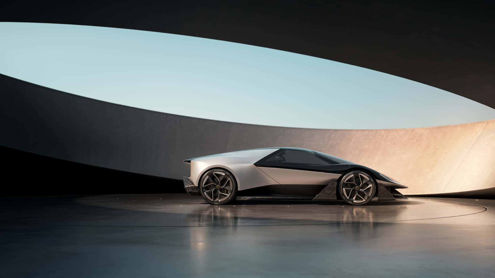
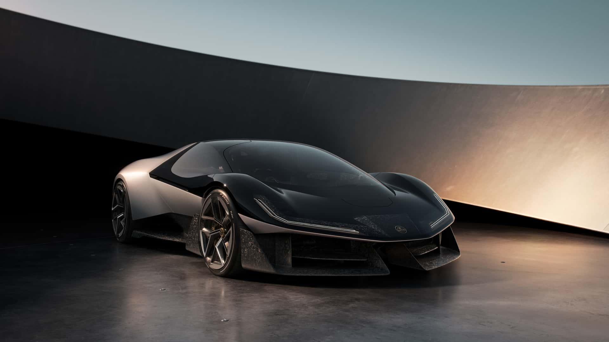
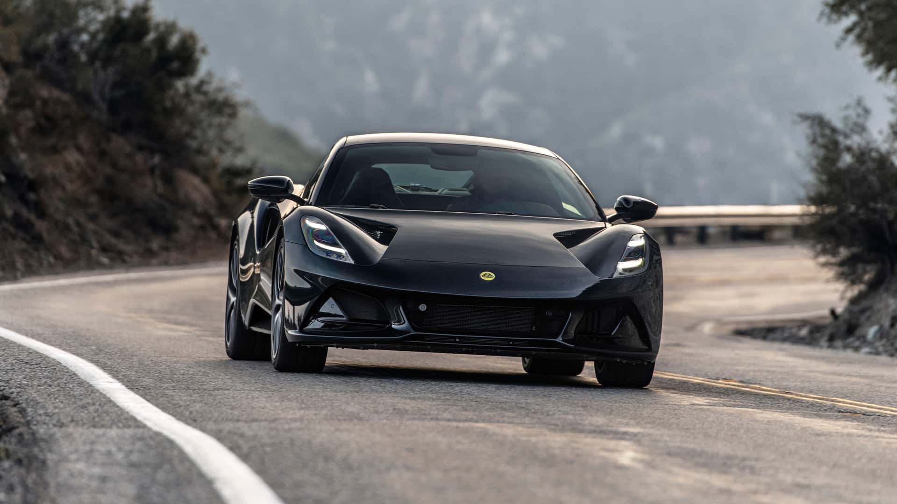
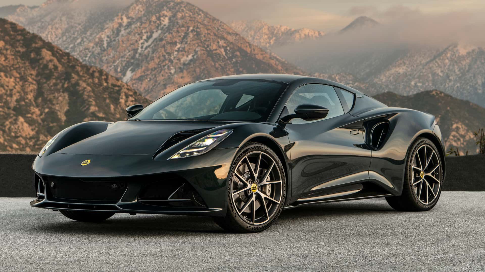

Confirmada para o Brasil, Lotus anuncia volta de motor V8 após 20 anos
Conhecido por enquanto como Lotus Type 135, ultraesportivo terá motor V8 de 1.000 cv e
chega em 2028
Por Massimo Grassi Traduzido por: Thomas Tironi

Fonte: Lotus

Fonte: Lotus

Fonte: Lotus

Fonte: Lotus